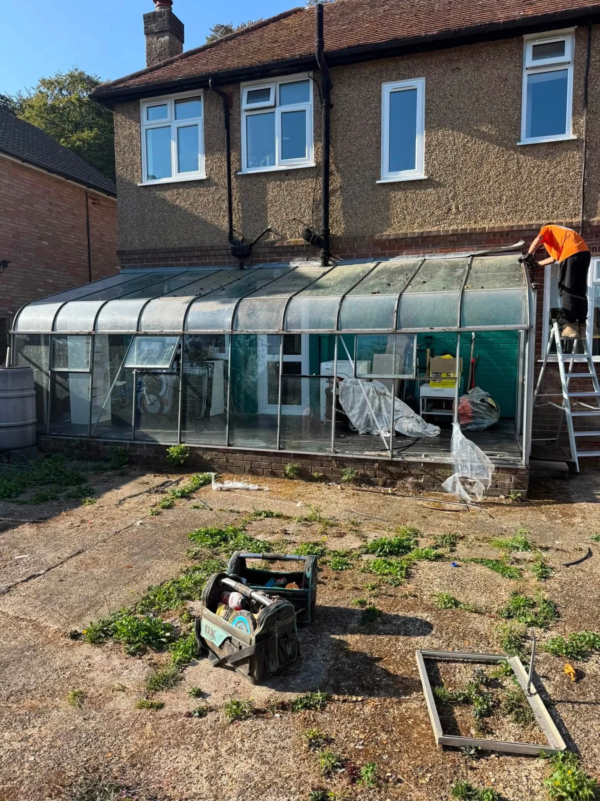
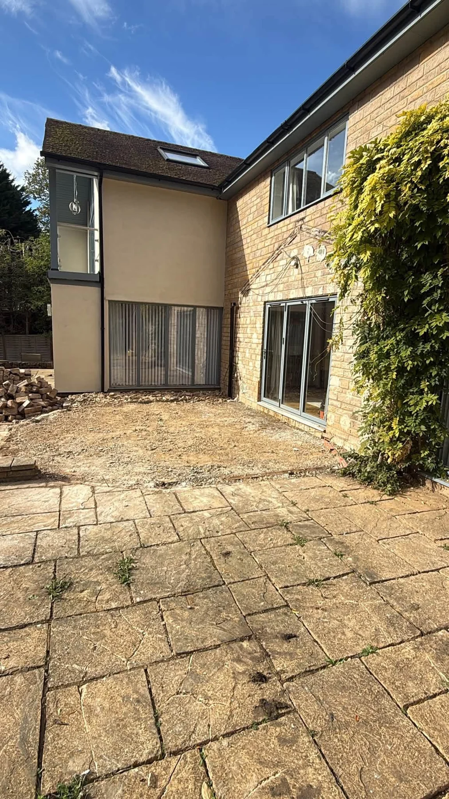
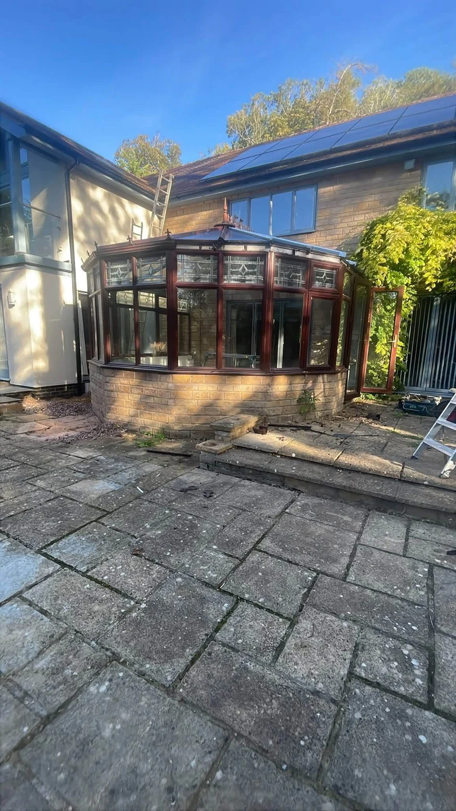

DemolitionSheds, conservatories and unwanted structures

BEDFORDSHIRE · DEMOLITION & WASTE REMOVAL
Clear the old.
Make space.
Demolition, strip-outs, waste removal and site clearance across Bedfordshire and surrounding areas. Send your job details for a free quote.
Licensed waste carriersFree quotesBedfordshire based
Waste RemovalWaste collections and clearance enquiries
Strip-outsKitchen units, worktops and interior removal
Site ClearanceClear space for the next stage of your project
DEMOLITION & CLEARANCE
Out with the old.
On with the next.
APEX Demolition & Waste Removals Ltd handles demolition, waste removal and site clearance across Bedfordshire and surrounding areas.
Whether you need an old structure removed or a room stripped back, send photos and your postcode so the job can be assessed.
Request a free quote →

CONSERVATORY REMOVAL
More room.
Less in the way.
This project shows a conservatory before dismantling and the space left behind. The existing house and patio remain clearly visible in the after photo.
Explore demolition services →Before
After
AT WORK
Real jobs. Clear results.
A selection of APEX’s demolition, strip-out and waste removal photos. Tap a photo to see it in full.
BEFORE & AFTER
See the difference.
Matched project photos, shown side by side. Each image opens in full without cropping the work out of view.
Shed removal
The concrete-panel shed removed, leaving its base and the surrounding access visible.
Kitchen strip-out
Existing units and worktops removed to expose the room for its next stage.
Decking removal
Old decking dismantled and removed from beside the house.
Lean-to removal
The glazed lean-to removed from the rear terrace.
APEX · BEDFORDSHIRE
One team.
A clearer space.
Demolition and waste removal go hand in hand. APEX offers structure removal, strip-outs and clearance, with free quotes based on the job you need doing.
01
Licensed waste carriers
Ask about waste collection alongside your demolition, strip-out or clearance enquiry.
02
Work shown clearly
See supplied shed, conservatory, decking and kitchen removal projects above.
03
Free quotes
Share photos, access details and your postcode to discuss the work.
FREE QUOTE
What needs to go?
Tell us about the structure, room or waste you need removed. Include the location and access details, then add photos in WhatsApp.
Bedfordshire & surrounding areas
Prefer a call? 07873 503833
This form prepares a WhatsApp message. Details are shared only when you send it and are not stored on this website.
USEFUL INFORMATION
Your questions.
What can APEX help remove?
Demolition, waste removal and site clearance are the main services. The supplied projects include sheds, conservatories, a glazed lean-to, decking and kitchen strip-outs.
Which areas do you cover?
Bedfordshire and surrounding areas. Send your postcode to check whether the job is within the service area.
How do I get a quote?
Use the WhatsApp form or call 07873 503833. Describe the job, location, approximate size and access. Photos help show what needs removing.
Can I get a price from photos?
Photos are a useful starting point. The structure, materials, waste volume and access all affect the quote, so APEX may need more information before confirming the work.
Are you a licensed waste carrier?
APEX advertises itself as a licensed waste carrier. You can ask the team for its registration details when arranging a collection.
Can you strip out an old kitchen?
Kitchen strip-out work is shown in the supplied photos. Tell the team what needs removing and what must stay, so the scope can be agreed before work starts.
APEX DEMOLITION & WASTE REMOVALS LTD
Ready for a fresh start?
Bedfordshire & surrounding areas · Free quotes